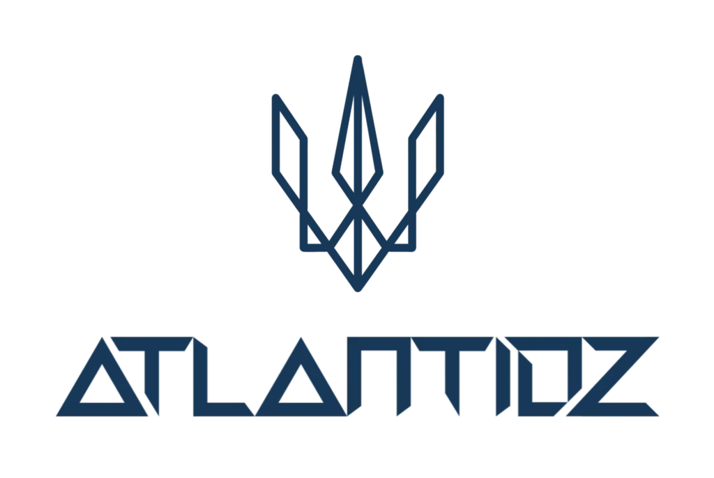

91,8% da base está inativa — 1.837 clientes cadastraram e nunca mais interagiram. Esse é o maior ponto de desperdício e a maior oportunidade de crescimento imediato. A base é limpa (zero duplicatas, 100% com dados completos), mas está sendo subutilizada.
30,1% da base (603 clientes) são de fora do Ceará — turistas que já visitaram e deixaram seus dados. Esse público é um ativo sub-explorado: campanhas de retorno sazonais (pré-férias, Réveillon, Carnaval) podem reativar essas leads com alto potencial de conversão.
Julho sozinho representa 27% de toda a base. A captação está excessivamente concentrada na alta temporada (Jul-Ago = 47%). Na baixa temporada (Dez-Mar), os números despencam para 11-114 cadastros/mês. Ativar captação constante (QR Code + Wi-Fi portal) é essencial para equilibrar o fluxo.
Campanha em 3 ondas via WhatsApp/e-mail:
Onda 1: Locais — cupom "Sentimos sua falta" (15 dias)
Onda 2: Turistas — "Planejando voltar? Cupom exclusivo"
Onda 3: Sem reação — oferta final + marcar como frio
191 aniversariantes em abril (mês mais cheio). Cada mês tem ~167 oportunidades automáticas. Configurar envio 3 dias antes com cupom especial de aniversário. Setup de 1 dia no Falaê.
QR Code em todas as mesas ativo o ano todo. Wi-Fi captive portal com cadastro obrigatório. Pesquisa rápida (3 perguntas) + cupom de retorno. Meta: mínimo 150 cadastros/mês na baixa.
Automatizar no Falaê: NPS 9-10 redireciona para Google/TripAdvisor. NPS 0-6 gera alerta no WhatsApp do gerente para resolução imediata. Turistas pesquisam antes de ir — nota alta é conversão.
Criar calendário fixo de campanhas: Pré-temporada (Jun): turistas da base anterior. Alta temporada (Jul-Ago): foco em captura massiva. Baixa temporada (Set-Mai): fidelização de locais, eventos temáticos, happy hour. Datas especiais: Réveillon, Carnaval, Dia dos Namorados — pacotes e experiências beira-mar.
Segmentar base nos 4 grupos. Ativar automação de aniversário. Configurar alerta de avaliação negativa para o gerente. Ativar QR Codes em todas as mesas.
Lançar campanha Onda 1 (locais inativos). Configurar automações de boas-vindas e pós-visita. Ativar Wi-Fi captive portal para captação contínua.
Lançar Onda 2 (turistas). Ativar funil de reputação digital (NPS → Google/TripAdvisor). Analisar resultados da Onda 1 e ajustar.
Lançar campanha pré-temporada para turistas. Preparar estratégia de captura massiva para Julho. Configurar cross-sell automático.
Análise completa de KPIs. Ajustar campanhas baseado em dados. Documentar playbook de automações para replicação contínua.